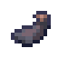

Crafting and automation: pages
Crafting and automation
The Midrange line
The Midrange line as early autocrafting - the Midrange System, Expansion Cabinet and Integrated Midrange System, punching recipes onto cards and reading them onto diskettes, the Line Printer and Printouts.
On this page
Early autocrafting from early materials#
The Midrange line is a family of machines in the style of a 1970s office computer, built from Circuit Substrate, Logic Dies, Ferrite and vanilla materials only. Long before you have the Processor Dies a Fabricator and a Scheduler need, it gives a network autocrafting: you punch crafting recipes onto cards, read the cards onto a diskette, and a Midrange System crafts from the diskette by itself.
A Midrange System is also its network's controller, an ELCL batch job host and a diskette drive, so one block can be the heart of a small first network.
| Block | Device name | What it does |
|---|---|---|
| MIDRANGE01 | The computer: controller, crafting host, diskette drive, batch host | |
| An upgrade beside a Midrange System | ||
| MIDRANGE01 | The bigger system, with its own Terminal OS console | |
| KEYPUNCH01 | Punches a recipe onto a Punch Card | |
| CARDRDR01 | Reads punched cards onto a diskette | |
| PRT01 | Prints reports and spooled output as Printouts | |
| DISK01 | One Storage Drive as hot storage: see Midrange storage | |
| TAPE01 | One Tape Reel as cold storage: see Midrange storage |
Every one of them is a named device on its network, listed on WRKDEV; the name goes with the block's item when you break it. Each multi-block machine is selected and outlined as one, whichever block you point at, and needs its whole footprint free to place.
Screenshot needed
A Midrange System with an Expansion Cabinet attached, a Card Punch, a Card Reader and a Line Printer beside it, all lit and running
docs/site-src/images/crafting/midrange-setup.png · 1600x900
Green screens#
Each machine opens a green screen like the Terminal Desk's: text only, worked with the keyboard (F-keys, option numbers typed beside a line, a command line at the bottom). There are no item slots, and the hotbar and HUD are hidden while one is open. Items go in and out on the block itself:
- Use an item on the block to put it in (a diskette, cards, paper).
- Sneak-use with an empty hand to take things out.
F13 is Shift+F1 (and so on up to F24). The command line runs Terminal OS commands as a desk's does (see Using the terminal).
Midrange System#
A waist-high cabinet on one block. Use it to open its control panel (MRCTL); use an  8" Diskette on it to put the diskette in; sneak-use with an empty hand to take the last diskette out.
8" Diskette on it to put the diskette in; sneak-use with an empty hand to take the last diskette out.
encodedlogistics:midrange_system
As a controller#
A Midrange System is the root of its network, as a Network Controller is (see Network Controllers):
- it hands out
rack.midrangeLaneFaces(default 4) controller faces' worth of lanes (128 at the default 32 lanes a face); - it's the network's energy buffer,
rack.midrangeEnergyBlocks(default 4) controller blocks' worth (100,000 FE at the default 25,000 a block), filled by the network's Power Inlets; - it drains
rack.midrangeDrain(default 4) FE a tick, plusrack.expansionCabinetDrain(default 1) with an Expansion Cabinet.
Any other controller on the same network (a Network Controller block, a rack controller, another Midrange System) is a controller conflict: nothing gets a lane, and the system shows E8.
As a crafting host#
The recipes on its diskette become the network's recipes: they show as craftable in every terminal, as if a Fabricator held them. When a job needs one, the Midrange System crafts it itself, at rack.midrangeStepTicks (default 40) ticks and rack.midrangeCraftEnergy (default 20) FE a craft. Steps that need other schematics go to the network's Fabricators and Gateways as usual.
It's also a job host, a choice on the plan screen ("Midrange MIDRANGE01"): 1 thread and a maximum job memory of 64 on its own. That's small, by design: a Midrange System makes simple things in small batches. See Schedulers for what threads and job memory mean.
It's also a batch job host for 1 ELCL job, and a diskette drive for SAVLIB and RSTLIB (see Libraries and the editor).
States and status codes#
A Midrange System is off while its network isn't running. Each time it comes online (and after a world load, or on F7 from its panel) it does an IPL (initial program load) for rack.midrangeIplTicks (default 100) ticks: its crafting pauses, and its batch jobs end with ELC0310. Then it runs.
| Code | Means |
|---|---|
| C1 to C*n* | IPL in progress |
| A6 | Running |
| A6b*n* | Running, crafting with n threads in use |
| E1 | No library diskette |
| E2 | A job waits for items (the block shows attention) |
| E8 | Controller conflict: another controller on its network |
| E9 | Offline: its network has no power |
The control panel (MRCTL)#
The panel shows the system's name, status code, threads, max job and batch jobs, then two lists:
- Drives (slot A, and B with an Expansion Cabinet): 4=Eject (the diskette comes to you), 5=Display recipes (F12 back), 8=Make default library (its diskette is the one SAVLIB and RSTLIB use first).
- Jobs: 3=Hold (the job starts no more steps), 4=End, 6=Release.
Keys: F7=IPL, F10=Hold queue (stops its job queue and takes it off the plan screen's choices), F11=Release, F5=Refresh, F3=Exit, F12=Cancel.
Screenshot needed
The MRCTL screen of a Midrange System with an Expansion Cabinet: status A6b1, two diskettes in drives A and B, one job running
docs/site-src/images/crafting/mrctl.png · 1280x720
Expansion Cabinet#
Place an Expansion Cabinet directly beside a Midrange System, along its width and facing the same way, and it attaches: the pair reads as one machine and the system's panel shows the second drive. One per system. It adds:
- a thread (2 in all) and a maximum job memory of 128;
- a second diskette slot (B);
- a second batch job.
Its lamp is lit while the system runs. Anywhere else it does nothing. If the cabinet goes, a diskette in slot B comes out.
encodedlogistics:expansion_cabinet
Integrated Midrange System#
The second-tier system: a two-panel cabinet with a diskette magazine unit and a built-in console, 3 × 2 blocks. It's crafted from a Midrange System, an Expansion Cabinet and a Terminal Desk, and does everything they do, more of it:
| Midrange System | with Expansion Cabinet | Integrated | |
|---|---|---|---|
| Threads | 1 | 2 | 4 |
| Max job memory | 64 | 128 | 512 |
| Batch jobs | 1 | 2 | 4 |
| Diskettes | 1 | 2 | A Diskette Magazine of 4 |
| Ticks a craft | 40 | 40 | 25 |
| Lanes (controller faces) | 4 | 4 | 6 (192 lanes) |
| Energy buffer (controller blocks) | 4 | 4 | 20 (500,000 FE) |
| Drain (FE/t) | 4 | + 1 | 8 |
encodedlogistics:integrated_midrange
Where you click on it counts:
- The console (its hood and keyboard) opens the Terminal OS: the same session and sign-on as a Terminal Desk (see Terminal Desk and Swivel Chair).
- The left body or the magazine unit opens its control panel, IMCTL. It's MRCTL with the magazine's four positions in place of the drives, and 4=Remove from magazine.
- The right body does nothing.
Cables join it at the bottom and back of its centre block only.
It takes a whole  Diskette Magazine rather than single diskettes: four diskettes, so up to 32 recipes.
Diskette Magazine rather than single diskettes: four diskettes, so up to 32 recipes.
Punching recipes#
Recipes reach a diskette in two steps: the Card Punch writes one recipe onto a card, the Card Reader reads a deck of cards onto a diskette. Both work only while a Midrange System on their network is running (next to it, or cabled to it), and they use no lanes. Until then their screens say "No Midrange System online on this network".
Punch Cards#
A  Punch Card is blank until it's punched; a punched card is the same item carrying its recipe. Four paper make eight.
Punch Card is blank until it's punched; a punched card is the same item carrying its recipe. Four paper make eight.
encodedlogistics:punch_card
Card Punch#
The Card Punch (1 × 2 blocks: a desk with its card unit raised) has a 3 × 3 grid on its screen, one field per crafting grid position:
- Use blank Punch Cards on it to load its hopper.
- Type an item's name in each position you need, as you'd lay the recipe out on a crafting table:
logic_die,minecraft:iron_ingot. F4 lists the items, those matching what you've typed first. Nothing is used up: you only name the items. - The screen shows what the recipe makes, and the card image it will punch. F6=Punch punches one card into the stacker; cards of the same recipe stack there.
- Sneak-use with an empty hand to take the punched cards (then the blank ones).
F13 clears the grid.
encodedlogistics:keypunch
Card Reader#
The Card Reader reads the punched cards in its 8-card hopper onto the  8" Diskette in its slot. Use cards and a diskette on it to load them. Its screen (CARDRDR) lists the deck, each card marked "new" or "replaces n" (or "no room"), and the diskette's recipes before and after. F6=Read reads them: each card's recipe is added to the diskette, or replaces the recipe there that makes the same item. A diskette holds up to 8 recipes. The cards stay in the hopper, so you can read the same deck onto several diskettes. Sneak-use with an empty hand takes the diskette out, then the cards.
8" Diskette in its slot. Use cards and a diskette on it to load them. Its screen (CARDRDR) lists the deck, each card marked "new" or "replaces n" (or "no room"), and the diskette's recipes before and after. F6=Read reads them: each card's recipe is added to the diskette, or replaces the recipe there that makes the same item. A diskette holds up to 8 recipes. The cards stay in the hopper, so you can read the same deck onto several diskettes. Sneak-use with an empty hand takes the diskette out, then the cards.
The Card Reader is a diskette drive for SAVLIB and RSTLIB too (DEV(CARDRDR01)).
encodedlogistics:card_reader
8" Diskettes and the magazine#
An  8" Diskette (stacks to 16) holds a label, up to 8 recipes, and ELCL libraries saved on it with SAVLIB (up to
8" Diskette (stacks to 16) holds a label, up to 8 recipes, and ELCL libraries saved on it with SAVLIB (up to elcl.disketteBytes (default 65,536) bytes of source). Put it in a Midrange System and its recipes are the network's.
encodedlogistics:diskette_8in
A  Diskette Magazine holds four diskettes for the Integrated Midrange System. It works like a bundle: click a diskette onto it to put it in, right-click it (with an empty cursor, or onto an empty slot) to take the last one out.
Diskette Magazine holds four diskettes for the Integrated Midrange System. It works like a bundle: click a diskette onto it to put it in, right-click it (with an empty cursor, or onto an empty slot) to take the last one out.
encodedlogistics:diskette_magazine
Line Printer#
The Line Printer (1 × 2 blocks: the paper leans back above it) prints reports and spooled files as Printouts, one paper a page, out of its front. Use paper on it to load it; sneak-use with an empty hand to take the paper back. Unlike the Card Punch and Card Reader, it works on any running network: a Midrange System's, a Terminal Desk's, a rack's.

encodedlogistics:line_printer
Its screen (PRINTER) prints one of four reports:
| Report | Prints |
|---|---|
| 1 | The network's inventory |
| 2 | The newest job's log |
| 3 | The device list |
| 4 | A spooled file: its name, or *LAST (F4 lists the network's) |
It shows the pages the report will take, the paper loaded and the printer's status. F6=Print prints it. If paper runs out part way, the pages so far come out and the rest waits for more paper (ELC1306).
The Terminal OS prints on it too: PRTRPT, and 6=Print on Work with Output (WRKSPLF), with DEV(PRT01) or *DFT. See Jobs, scheduling and triggers.
Printouts#
A  Printout is continuous-form green-bar paper in the terminal font, up to 100 pages. Each page has the system, the title and the date at the top, PAGE n OF m, and \\\* END OF REPORT \\\* (or \\\* CONTINUED \\\*) at the foot; a line longer than 56 columns carries on, on the next row after a
Printout is continuous-form green-bar paper in the terminal font, up to 100 pages. Each page has the system, the title and the date at the top, PAGE n OF m, and \\\* END OF REPORT \\\* (or \\\* CONTINUED \\\*) at the foot; a line longer than 56 columns carries on, on the next row after a >.
- Hold it and its page is in view, as a map is.
- Use it to read it: Page Up and Page Down, or the mouse wheel, turn the pages.
- In an item frame its first page shows.
Its tooltip gives the title, the number of pages, and the printer and time it was printed on. Printouts only come from the Line Printer.
Screenshot needed
A player holding a Printout of report 1 (network inventory) in the main hand, its first page in view
docs/site-src/images/crafting/printout.png · 1600x900
A first Midrange setup#
- Place a Midrange System, cable a Power Inlet to it and bring FE in: it's the network's controller, so it needs no Network Controller.
- Add a Drive Bay (or a Disk Drive) with a drive, and an Access Terminal.
- Place a Card Punch and a Card Reader beside it. Punch the recipes you want automated, read them onto a diskette, and put the diskette in the Midrange System.
- Middle-click one of those items in the Access Terminal, and pick "Midrange MIDRANGE01" (or leave it on Auto) on the plan screen.
When you outgrow it, a Fabricator and a Scheduler take over (see Schedulers). The Midrange System can't share a network with a Network Controller, so move its diskettes' recipes to schematics before you swap it out.